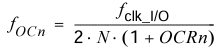
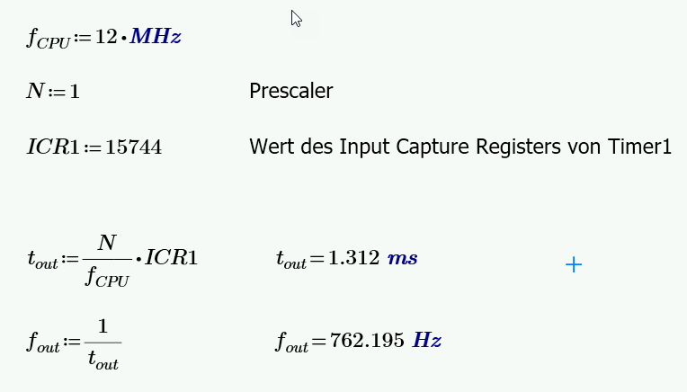
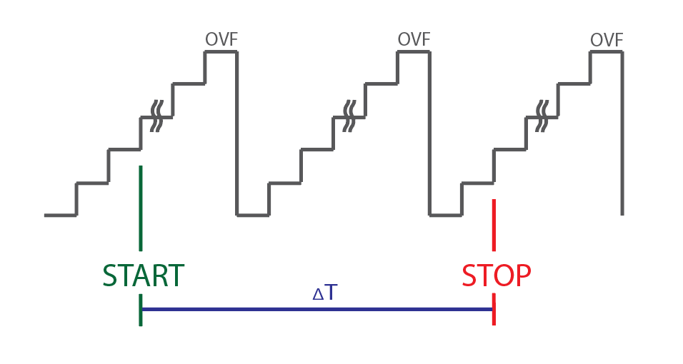
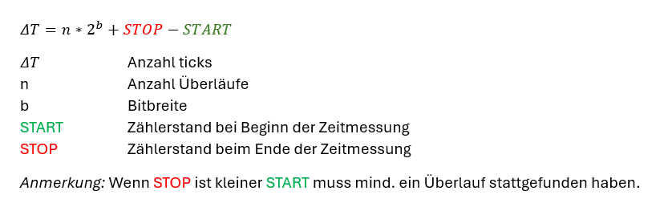
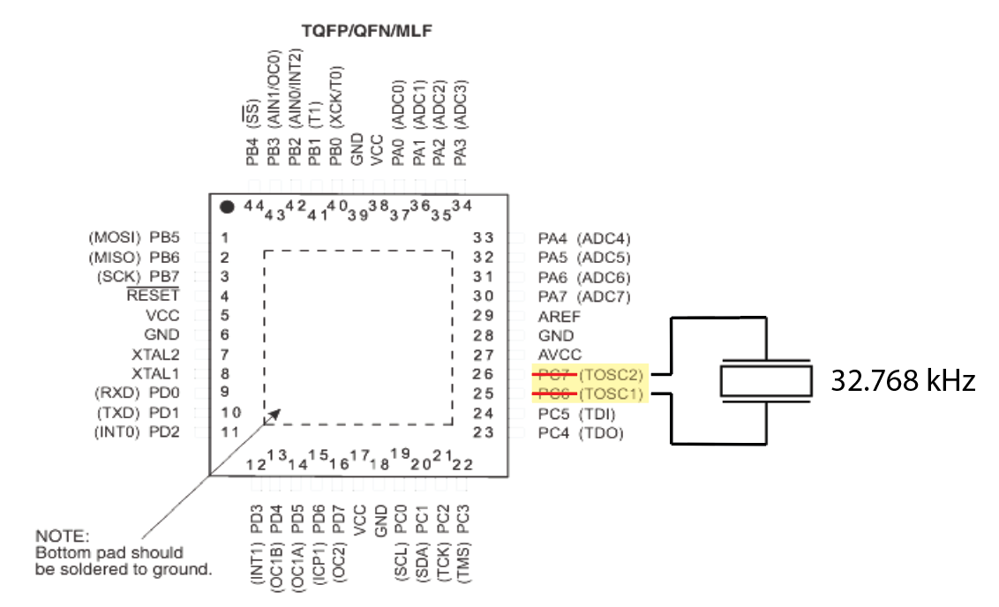

3. Timer
In diesem Abschnitt werden die Grundlagen zu Timer0, Timer1 und Timer2 behandelt. Eine tiefergehende Einführung findet dabei im Wahlfach statt.
3.1 Allgemeines
3.2 Timer0
3.2.1 CTC Mode (Clear Timer on Compare)
Der CTC Mode kann verwendet werden um ein Rechtecksignal zu erzeugen. Dies wird erreicht, indem ein Ausgang beim Erreichen des OCR-Wertes getoggelt wird (entweder manuell oder über den Compare Output toggle mode).
Dabei berechnet sich die Frequenz mit der folgenden Formel:
N ... Prescaler Wert

3.3 Timer1
3.3.1 Unterschiede zu Timer0
3.3.2 ICP Mode
Port D, Bit 6 hat als alternative Funktion ICP1 (Input Capture Pin für Timer 1). Das Input Capture Register (ICR1) kann den Timer/Counter Wert zu einem externen (flankengetriggerten) Ereignis speichern.
3.3.3.1 Beispiel
Im folgenden Beispiel wird mit Timer 0 ein Signal erzeugt, welches am Ausgang PB0 ausgegeben wird.
Dieses Signal wird mit PD6 verbunden, wo mit Timer 1 die Periodendauer/Frequenz des Signals bestimmt wird und auf dem Display ausgegeben wird.
Die Periodendauer/Frequenz wird dabei mit folgenden Formeln bestimmt:

3.3.3 Allgemeines zur Zeitmessung
Im bisherigen Beispiel haben wir nur betrachtet, wie die Zeit zwischen zwei (steigenden) Flanken berechnet werden kann. Dabei war zu beachten, dass der Zähler nicht überläuft, sprich die Periodendauer nicht länger ist als 2^16 Taktzyklen (Timer1). Für z.B. die Implementierung einer Stopuhr ist dies nicht ausreichend. Im folgenden werden allgemeine Hinweise gegeben, was bei einer Zeitmessung/Stoppuhr beachtet werden muss.
Problem 1: Überlauf des Zählers
Der maximale Zählerwert ist begrenzt durch die Bitbreite des verwendeten Timers (8 bzw. 16 bit).

Als allgemeine Formel zum berechnen der Anzahl der ticks zwischen START und STOP kann verwendet werden:

Problem 2: Zwischenzeit
Der Timer kann für die Messung der Zwischenzeit nicht angehalten werden da dies eine Fehlzeit ergeben würde.
Als Lösung können Schattenregister verwendet werden (Double Buffered Register).
Weitergehende Informationen finden sich z.B. hier
Problem 3: Datentypen
Für die Speicherung von langen Zeitmessugen müssen Datentypen mit großen Wertebereichen gewählt werden, z.B. uint32_t oder uint64_t. Siehe auch Kapittel Datentypen im Modul C-Programmierung.
3.4 Timer 2
Timer2 hat im Wesentlichen die gleichen Modi wie Timer0 und ist ebenfalls ein 8-bit Timer/Counter und leichte Abweichungen (z.B. andere Prescaler) Wie bei Timer1 (ICP Mode, insbesondere für Zeitmessung) wird im folgenden für Timer2 nur auf eine Besonderheit eingegangen: die Möglichkeit einen Real Time Counter/Clock (RTC) zu implementieren.
Bei setzen des Bits AS2 im ASSR Register, wird Timer2/Counter2 asynchron vom Eingang TOSC1 getaktet. Dabei wird ein Quarz twischen den Pins TOSC1 und TOSC2 angeschlossen. Der interne Oszillator ist dabei optimiert für die Verwendung eines 32.768 kHz Quarzes. Diese Quarze sind typisch für Uhrenanwendungen da:
- Günstig herzustellen
- Niedrigerer Stromverbrauch (wg. niedriger Frequenz)
- Teilbar um z.B. 1Hz Signal zu erzeugen
So ergibt z.B. ein Prescaler von 128 bei einem 8-bit Zähler einen Zählerüberlauf jede Sekunde.
Details finden sich im Datenblatt im Abschnitt Asyncrhonous Operation of the Timer/Counter2.

Die folgende Application Note AVR Application Note 134 beschreibt, wie man eine RTC für einen AVR implementieren kann.